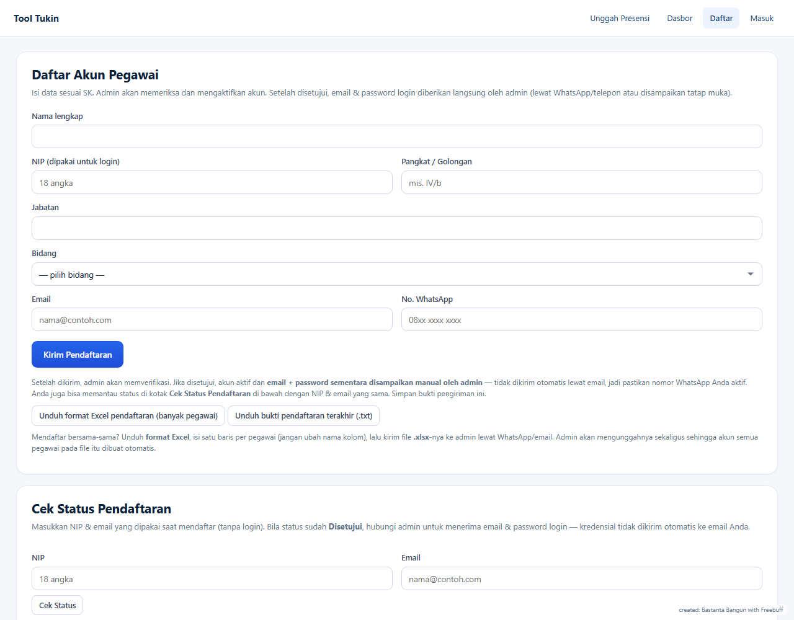
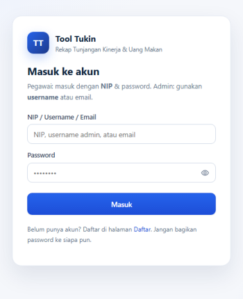
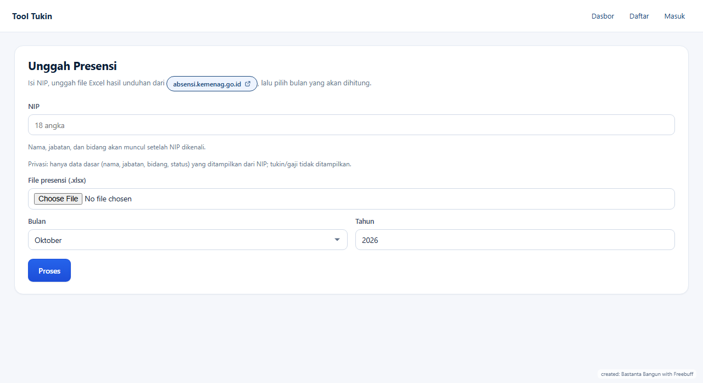

TT
Sistem Informasi Kepegawaian
Panduan Pendaftaran
dan Pengisian
Aplikasi Tool Tukin — rekap kehadiran, tunjangan kinerja (Tukin),
dan uang makan pegawai.
Alamat aplikasi:
https://tool-tukin.vercel.app
Untuk pegawai dan admin · Versi November 2026
Tangkapan layar diambil langsung dari aplikasi produksi.
| A | Pendaftaran akun pegawai (satu per satu) | Hal. 3 |
| B | Pendaftaran banyak pegawai sekaligus (Excel) | Hal. 4 |
| C | Cek status pendaftaran | Hal. 5 |
| D | Masuk ke aplikasi dan ganti password | Hal. 5 |
| E | Pengisian: unggah presensi dan hitung Tukin | Hal. 6 |
| F | Dasbor pegawai dan unduh rekap PDF | Hal. 8 |
| G | Untuk admin: verifikasi dan ekspor rekap | Hal. 8 |
| H | Kendala umum dan solusinya | Hal. 10 |
Alur singkat
1. DaftarIsi data diri di halaman Daftar.
2. Verifikasi adminAdmin memeriksa dan menyetujui akun.
3. Terima akunNIP & password dari admin via WhatsApp.
4. MasukLogin di halaman Masuk, ganti password.
5. Unggah presensiUnduh file dari absensi.kemenag.go.id.
6. Proses & cekPeriksa Tukin & uang makan, centang sudah benar, lalu kirim ke admin.
Yang perlu disiapkan sebelum mulai:
- NIP 18 angka dan data sesuai SK (nama, pangkat/golongan, jabatan, bidang).
- Alamat email aktif dan nomor WhatsApp yang bisa dihubungi.
- File presensi .xlsx hasil unduhan dari absensi.kemenag.go.id untuk bulan yang akan dihitung.
- Peramban (Chrome/Edge) di komputer atau HP yang tersambung internet.
Bisa dipasang seperti aplikasi di HP Android: buka alamat aplikasi di Chrome,
tekan menu ⋮ → Instal aplikasi / Tambahkan ke layar utama.
Ikon TT muncul di layar utama dan aplikasi terbuka tanpa address bar.
A
Pendaftaran Akun Pegawai
Pendaftaran dilakukan sendiri oleh pegawai. Akun tidak langsung aktif:
admin memeriksa data lebih dulu, lalu memberikan NIP dan password.
1
Buka https://tool-tukin.vercel.app, lalu tekan tombol Daftar
di bawah tombol Masuk (alamat langsung: /daftar.html).

Halaman Daftar Akun Pegawai: formulir pendaftaran dan kotak Cek Status Pendaftaran.
2
Isi seluruh kolom sesuai SK:
| Kolom | Keterangan |
|---|
| Nama lengkap | Nama sesuai SK, tanpa gelar jika tidak dipakai di SK. |
| NIP | Tepat 18 angka, tanpa spasi/titik. NIP ini menjadi username login. |
| Pangkat / Golongan | Contoh: IV/b. |
| Jabatan | Jabatan sesuai SK. |
| Bidang | Pilih satu dari 11 bidang (Tata Usaha, Kanwil, PAI, Bimas Buddha, Bimas Hindu, Bimas Kristen, Bimas Katolik, PenaisZawa, Penmad, Pontren, Urais). |
| Email | Email aktif, wajib diisi. Dipakai admin untuk mencocokkan data. |
| No. WhatsApp | Nomor aktif (minimal 10 angka). Kredensial akun dikirim admin lewat WhatsApp. |
3
Tekan Kirim Pendaftaran. Bila ada kolom yang salah, muncul pesan merah,
misalnya “NIP harus 18 angka” atau “Nomor WhatsApp wajib diisi”. Perbaiki lalu kirim lagi.
4
Tekan Unduh bukti pendaftaran terakhir (.txt) dan simpan berkasnya sebagai bukti
pengiriman.
Penting: email dan password tidak dikirim otomatis oleh sistem. Setelah disetujui,
admin menyampaikan kredensial secara manual (WhatsApp/telepon/tatap muka). Pastikan nomor
WhatsApp Anda aktif.
Apa yang terjadi setelah pendaftaran dikirim?
MenungguPendaftaran masuk ke daftar admin.
DiperiksaAdmin mencocokkan data dengan SK.
DisetujuiAkun aktif; NIP & password dikirim via WhatsApp.
Masuk & ganti passwordLogin dengan NIP, lalu buat password sendiri.
Unggah presensiMulai mengisi data bulanan Anda.
B
Pendaftaran Banyak Pegawai (Excel)
Cara ini dipakai bila mendaftarkan beberapa pegawai sekaligus, misalnya satu bidang.
1
Di halaman Daftar, tekan Unduh format Excel pendaftaran (banyak pegawai).
2
Buka file .xlsx, isi satu baris per pegawai. Jangan mengubah nama kolom.
3
Simpan file, lalu kirim ke admin lewat WhatsApp atau email.
4
Admin mengunggah file tersebut di panel admin. Akun semua pegawai pada file
dibuat otomatis (username NIP, password awal 12345678) dan wajib diganti saat login pertama.
Status bisa dicek tanpa login, memakai NIP dan email yang sama seperti saat mendaftar.
1
Di bagian bawah halaman Daftar, isi NIP dan Email pada kotak
Cek Status Pendaftaran.
2
Tekan
Cek Status. Status yang mungkin muncul:
- Menunggu — pendaftaran sudah masuk, belum diperiksa admin.
- Disetujui — akun aktif. Hubungi admin untuk menerima NIP & password login.
- Ditolak — pendaftaran tidak disetujui; hubungi admin untuk keterangannya.
Belum punya akun tapi sudah terdaftar sebagai pegawai? Hubungi admin. Admin dapat
membuatkan akun langsung dari tab Data Pegawai tanpa menunggu pendaftaran.
D
Masuk ke Aplikasi dan Ganti Password
1
Buka https://tool-tukin.vercel.app lalu tekan tombol Masuk
(alamat langsung: /masuk.html).

Halaman Masuk: pegawai memakai NIP; admin memakai username atau email.
2
Pegawai: isi NIP 18 angka pada kolom pertama dan password dari admin.
Admin: isi username admin atau email.
3
Tekan Masuk. Anda akan diarahkan ke dasbor: pegawai ke
/dasbor.html, admin ke panel /admin.html.
4
Saat login pertama (atau setelah admin mereset sandi), muncul kartu
Ganti password. Masukkan password baru minimal 8 karakter dua kali, lalu simpan.
Keamanan: password awal 12345678 hanya untuk sekali pakai — segera ganti.
Jangan bagikan password kepada siapa pun, termasuk yang mengaku petugas. Sesi login berakhir
saat tab ditutup, jadi Anda perlu masuk lagi pada kunjungan berikutnya.
Lupa password? Hubungi admin. Admin dapat mereset sandi dari tab Data Pegawai
ke 12345678; setelah itu Anda diminta menggantinya lagi.
E
Pengisian: Unggah Presensi dan Hitung Tukin
Bagian ini adalah inti pemakaian aplikasi: mengunggah file presensi bulanan, lalu aplikasi
menghitung kehadiran, Tukin, dan uang makan secara otomatis.
1. Unduh file presensi dari absensi.kemenag.go.id
1
Buka https://absensi.kemenag.go.id (di aplikasi juga tersedia tombolnya),
lalu masuk dengan akun presensi Anda.
2
Pilih periode satu bulan penuh yang akan dihitung, lalu unduh
rekap presensi dalam format Excel (.xlsx).
3
Simpan file di komputer/HP. Nama file sebaiknya tetap memuat nama Anda dan bulan,
misalnya Hendro_Presensi 10-2026.xlsx.
Satu bulan satu file. Jangan menggabungkan beberapa bulan dalam satu file, dan jangan
mengubah susunan kolom file presensi. Bulan pada file harus sama dengan bulan yang dipilih
di aplikasi.
2. Unggah dan proses di Tool Tukin
1
Masuk dengan akun Anda, lalu buka menu Unggah Presensi di dasbor
(alamat langsung: /unggah.html).

Halaman Unggah Presensi (/unggah.html): isian NIP, file Excel, bulan, dan tahun.
2
Isi NIP 18 angka. Bila NIP dikenali, nama, NIP, jabatan, golongan, dan bidang
muncul otomatis. Bila tidak muncul, periksa kembali angka NIP atau hubungi admin.
3
Pada File presensi (.xlsx), tekan Choose File / Pilih file,
lalu pilih file yang sudah diunduh tadi.
4
Pilih Bulan dan isi Tahun sesuai isi file (contoh: Oktober 2026).
5
Tekan Proses, lalu tunggu sampai muncul kotak Rekap Kehadiran.
6
Periksa hasilnya:
- Rekap Kehadiran — hari kerja, hadir, terlambat, pulang awal, tanpa keterangan,
tanpa presensi masuk/pulang, cuti, sakit, dinas luar, izin.
- Tukin — bruto, potongan, pajak, dan Tukin bersih.
- Uang Makan — hari hadir, tarif, bruto, PPh, dan jumlah bersih.
Di atas kotak Tukin dan Uang Makan ada tulisan
“Tolong cek kebenaran jumlah uang
tukin dan uang makan di absensi.kemenag.go.id”. Tekan tulisan itu untuk membuka
situs absensi di tab baru, lalu bandingkan jumlahnya.
7
Bila jumlah Tukin dan Uang Makan sudah sesuai, centang pernyataan
“Sudah benar” di bawah masing-masing kotak (Tukin dan Uang Makan).
Tombol Proses Kirim ke Admin baru aktif setelah keduanya dicentang.
8
Tekan Proses Kirim ke Admin. Dengan menekan tombol ini pengirim
menyatakan sudah memastikan kebenaran Tukin dan Uang Makan untuk diproses admin login.
Bila muncul pesan “Selamat Data Anda Sudah Terupload”, data tersimpan
sebagai pengajuan berstatus menunggu verifikasi. Tekan
Unduh bukti pengajuan (.txt) dan simpan.
Penting: sebelum tombol kirim ditekan, hasil hanya ditampilkan dan belum masuk
ke admin. Bila halaman ditutup lebih dulu, ulangi proses dari awal. Setelah terkirim, tidak
ada lagi yang perlu diisi pegawai. Potongan HUKDIS/TB diisi admin saat verifikasi.
Hasil final dapat dilihat di dasbor setelah admin menyetujui.
Jika ingin memperbaiki data: proses ulang dengan file yang benar. Sistem menyimpan
pengajuan terbaru untuk pegawai dan periode yang sama, sehingga tidak terjadi data ganda.
Bila pengajuan sudah disetujui dan perlu diubah, hubungi admin.
F
Dasbor Pegawai dan Unduh Rekap PDF
Dasbor adalah halaman ringkasan milik Anda sendiri. Isinya hanya data Anda; pegawai lain
tidak dapat melihatnya.
Yang tampil di dasbor
- Profil — nama, NIP, jabatan, golongan, bidang, dan nomor HP (tombol Edit data
untuk mengubah nomor HP sendiri).
- Periode aktif dan status pengajuan terakhir (menunggu verifikasi / disetujui / ditolak).
- Rekap presensi — ringkasan kehadiran, dengan rincian per hari: tanggal, jam
masuk/pulang, menit terlambat, pulang awal, tanpa absen, tanpa keterangan, cuti/sakit/dinas.
- Tukin dan Uang Makan milik Anda beserta rincian potongannya.
- Riwayat pengajuan bulan-bulan sebelumnya.
Mengunduh rekap bulanan (PDF)
1
Di sidebar dasbor, pilih menu Unduh Rekap.
2
Centang bulan yang ingin diunduh (boleh lebih dari satu, misalnya
seluruh bulan dalam satu tahun).
3
Pilih bagian yang diinginkan: Kehadiran, Tukin, Uang Makan,
atau All (ketiganya).
4
Tekan tombol unduh. Berkas PDF ukuran A4 dibuat langsung di peramban.
Satu blok pendek per bulan berisi jumlah hadir, daftar tanggal telat/pulang awal/tanpa absen,
cuti/sakit/dinas, lalu bruto, potongan, dan Tukin bersih; uang makan berisi hari × tarif,
PPh, dan bersih. Rekap 12 bulan kira-kira 3 halaman.
Ganti password juga bisa dilakukan kapan saja dari tautan di sidebar dasbor
(halaman /ganti-password.html) tanpa perlu memasukkan password lama.
G
Untuk Admin: Verifikasi dan Ekspor Rekap
Bagian ini ringkas untuk admin. Panel admin hanya dapat dibuka akun berperan admin;
akun pegawai yang membuka /admin.html akan dialihkan ke dasbor.
Menyetujui pendaftar
1
Masuk, lalu buka tab Pendaftar. Periksa kecocokan data dengan SK.
2
Tekan Setujui. Dialog menampilkan username (NIP) dan password
sementara dengan tombol Salin / Salin Semua — kirim ke pegawai lewat WhatsApp.
Bila ditolak, tekan Tolak dan isi catatan.
Memverifikasi pengajuan presensi
1
Buka tab Perlu Tindakan. Pada tabel Pengajuan presensi ada kolom
Pemeriksaan pengirim: tanda Sudah diperiksa pengirim berarti pegawai sudah
mencocokkan Tukin dan Uang Makan dengan absensi.kemenag.go.id lalu mencentang
“Sudah benar” sebelum mengirim. Pengajuan lama dapat bertanda
Belum dikonfirmasi pengirim. Tekan Detail untuk melihat penanda itu beserta
rincian sebab potongan per hari (telat, pulang awal, tidak presensi, tanpa keterangan,
cuti/sakit/dinas) sebelum memutuskan.
2
Isi HUKDIS/TB bila ada, lalu tekan Setujui atau Tolak.
Tombol Reset menghapus pengajuan beserta presensi dan rekapnya.
Ekspor rekap bulanan (Excel)
1
Buka tab Ekspor Rekap, pilih bulan dan tahun, lalu
Muat data.
2
Tentukan bidang dan pegawai lewat kotak centang, lalu unduh
Rekap Kehadiran, Rekap Tukin, Rekap Uang Makan, atau ketiganya.
Tombol ⬇ 3 berkas mengunduh ketiga jenis untuk satu bidang sekaligus.
Ambil presensi dari folder Google Drive
1
Buka tab Ambil dari Drive, tempel link folder Drive publik,
pilih bulan/tahun, lalu Baca Folder.
2
Tekan Proses Semua File dan tunggu bar progres selesai. Bila nama file
cocok dengan lebih dari satu pegawai, muncul baris Perlu dipilih — pilih orangnya
lalu tekan Proses.
Data Pegawai: tab ini dipakai menambah/mengubah pegawai, menonaktifkan pegawai,
mereset sandi, mengunggah Excel pendaftaran, dan memantau Status sandi
(Password awal / Sudah diganti / Belum ada akun).
H
Kendala Umum dan Solusinya
| Pesan / kendala | Yang perlu dilakukan |
|---|
| “NIP harus 18 angka” | Ketik ulang NIP tanpa spasi, titik, atau tanda baca. Pastikan tepat 18 digit. |
| “Email wajib diisi” / “Nomor WhatsApp wajib diisi” | Lengkapi kolom tersebut; nomor WA minimal 10 angka. |
| Nama tidak muncul setelah NIP diisi | NIP belum terdaftar atau salah ketik. Hubungi admin untuk memastikan data pegawai. |
| Login gagal / password salah | Gunakan NIP 18 angka, bukan nama. Bila lupa password, minta admin mereset ke 12345678. |
| Hasil hitung tidak sesuai | Pastikan file presensi berisi satu bulan penuh dan bulan/tahun yang dipilih sama dengan isi file. Bila tetap berbeda, hubungi admin. |
| File presensi tidak mau diproses | Gunakan file .xlsx asli dari absensi.kemenag.go.id; jangan ubah kolom, jangan simpan sebagai PDF/gambar. |
| Data sudah diunggah tetapi belum muncul di dasbor | Pengajuan masih menunggu verifikasi. Hasil final muncul setelah admin menyetujui. |
| Halaman tidak bisa dibuka | Periksa koneksi internet, lalu muat ulang. Coba peramban Chrome/Edge versi terbaru. |
Bantuan lebih lanjut: hubungi admin/pengelola Tool Tukin di kantor. Sertakan
NIP, bulan/tahun, dan tangkapan layar pesan galat agar cepat ditangani.
Panduan Pendaftaran dan Pengisian — Tool Tukin, https://tool-tukin.vercel.app ·
disusun November 2026. Tangkapan layar berasal dari aplikasi produksi dan dapat berbeda
sedikit bila tampilan diperbarui.